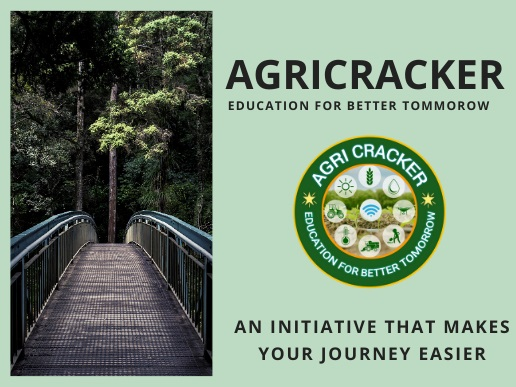

Best Institute in central India
Agricracker is an initiative taken by the group of students with an objective to transfer the knowledge to the students in an easy, understandable, relatable and meaningful manner. We, the faculty members of agricracker will not only give our best to you, to crack the exams but we will also try to change the way you look to your subjects, courses and degree. Agricracker, as an initiative has been put forward to change,
- the way you study
- the way you think
- the way you attend classes
- the way you respond to teachers in the class
- the way you respond to yourself in the class
As being the coordinator of Agricracker, I, Rajnish Kumar Sahu, M.Sc. fruit science, IGKV Raipur can assure you that you are investing your time in the right palce. Agricracker Provides :-
- Online Live Classes
- Weekly Test
- Hand Written Notes
- Subject Specific Faculty
- 15 Days Test Series
- Quick Review and Revision Session
Testimonials
Student Feedback